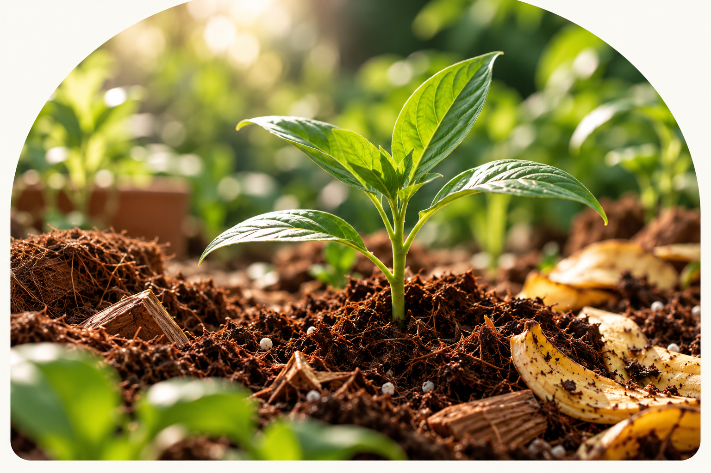
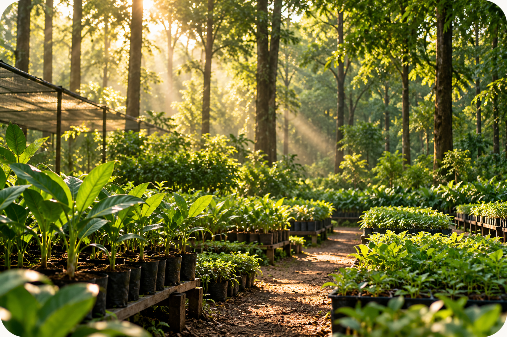

01
Cocopeat
Derived from coconut husks, cocopeat is widely used in horticulture for its water-holding properties and role in growing-media mixes.
Meet ECOGROW — a growing-media concept combining cocopeat with treated banana-peel material, developed with care for potential gardening and horticultural applications.


The materials surrounding a plant's roots influence the growing environment. ECOGROW explores a blend of cocopeat and treated banana-peel material, with formulation and suitability guided by evaluation and trials.
Derived from coconut husks, cocopeat is widely used in horticulture for its water-holding properties and role in growing-media mixes.
A plant-derived material being explored as part of the blend. Its treatment, suitability, and contribution to the final product require appropriate validation.
Growing media should be assessed by how they perform—not just by the materials they contain. These are the key properties ECOGROW aims to evaluate during development.
Assessing how the blend holds and releases water under relevant growing conditions.
Evaluating physical structure, air space, drainage, and the conditions around plant roots.
Working toward consistent specifications through appropriate checks and documented testing.
Using material evaluation and plant trials to determine appropriate uses and limitations.
ECOGROW is being explored for selected horticultural settings. Final recommendations will depend on formulation, test results, and the needs of each plant and growing system.

Potential use in pots and container-growing mixes, subject to suitability testing.
Evaluation for nursery growing and propagation systems through controlled trials.

Assessment for selected applications where the blend's measured properties meet crop needs.
A growing medium needs more than a promising ingredient list. ECOGROW's development process focuses on preparation, formulation, evaluation, and learning from trials.
Identify suitable cocopeat and banana-peel feedstock for the intended formulation.
Prepare the raw materials using appropriate processing and treatment methods.
Develop and document blend proportions for evaluation and refinement.
Assess relevant properties such as pH, electrical conductivity, drainage, and moisture behaviour.
Observe plant response under suitable test conditions and compare results where appropriate.
Use findings to improve consistency and define appropriate product specifications and uses.
We believe confidence in a growing medium comes from transparent information, careful development, and a clear understanding of what the product can—and cannot—do.
Choose and prepare inputs suited to the intended formulation.
Work toward a repeatable blend and clear product specifications.
Evaluate relevant properties before communicating performance benefits.
Consider real growing conditions and the needs of horticultural users.
A few helpful details about the product concept and its development.
ECOGROW is a growing-media product concept based on a blend of cocopeat and treated banana-peel material. Its final formulation and recommended uses will be established through product development and validation.
That depends on the final formulation, plant species, and growing conditions. Testing is needed to determine whether the product is suitable as a standalone growing medium or as one component of a growing mix.
Different plants have different moisture, aeration, pH, and nutrient requirements. ECOGROW's recommended applications will depend on evaluation and plant trials.
The nutrient content and availability of the final blend have not been established here. Appropriate testing is required before making nutrient-related claims or recommending it as a complete growing medium.
Availability will depend on product development, testing, and commercial readiness. Contact us for updates on the product's progress.
We're happy to hear from gardeners, nursery operators, horticultural professionals, and potential product-development collaborators interested in our growing-media concept.